Fourth Wing by Rebecca Yarros is a fantasy romance novel and the first book in the Empyrean series. The story follows Violet Sorrengail, who is unexpectedly forced to attend Basgiath War College and train to become a dragon rider. Although she had always planned to become a scribe, Violet is thrown into a dangerous world filled with brutal training, deadly challenges, dragons, and rival riders. As she fights to survive, she also finds herself drawn into a complicated relationship with Xaden Riorson, one of the most powerful and dangerous riders at the college.
*A Court of Thorns and Roses* by Sarah J. Maas follows nineteen-year-old Feyre, whose life changes when she kills a wolf in the woods and is taken to the magical land of Prythian. There, she discovers that the faerie world is far more complicated than she ever imagined. As an ancient curse threatens the land and its rulers, Feyre becomes caught in a dangerous struggle against the powerful Amarantha. With the help of unexpected allies, she must face a series of deadly challenges while uncovering the truth about the world around her—and her own feelings along the way.
*The Wheel of Time* by Robert Jordan begins in the quiet village of Emond’s Field, where the arrival of Moiraine Damodred sets a dangerous journey in motion. She is searching for the person foretold to confront the Dark One, an ancient force threatening to plunge the world into chaos. When mysterious and deadly creatures attack the village, Moiraine convinces Rand al’Thor and his friends to leave their home behind. Together, they venture into a vast and unfamiliar world where ancient prophecies, hidden dangers, and a growing battle between light and darkness await them.
Six of Crows by Leigh Bardugo is set in Ketterdam, a lively city where money and power can buy almost anything. When criminal mastermind Kaz Brekker is offered an opportunity to pull off an incredibly dangerous heist, he assembles a team of six unlikely allies. Each member has their own skills, secrets, and reasons for joining the mission. Together, they must attempt the impossible while navigating rivalries, hidden motives, and the constant threat of turning against one another. If they want to succeed, they will have to learn to work together—and stay alive.

Transparency Everything else on this site was designed and built 100% by me. No sneaky ad networks, no commercial trackers, and no unnecessary cookies.